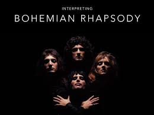

Welcome To Music Genre Introduction
Everyone has their own taste of music. But do we really know the music outside of our cup of tea?
This website will show various type of music genre.
What is music genre?
A music genre is a conventional category that identifies some pieces of music as belonging
to a shared tradition or set of conventions.
It is to be distinguished from musical form and musical style,
although in practice these terms are sometimes used interchangeably.
A music genre or subgenre may also be defined by the musical techniques, the cultural context,
and the content and spirit of the themes.
Geographical origin is sometimes used to identify a music genre,
though a single geographical category will often include a wide variety of subgenres.
For more info go to Music genre (Wikipedia)
Songs that contains many genres

Queen - Bohemian Rhapsody
Twenty One Pilots - Ode To Sleep
Girls Generation - I got a Boy